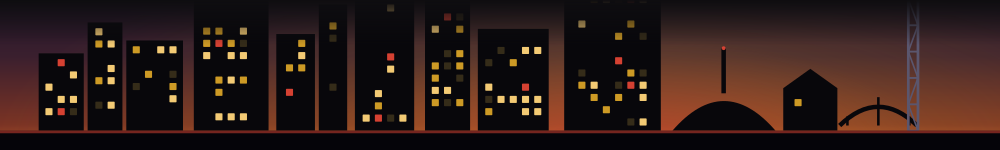

← Fleeting HQ

The founding era
You're early. That's the whole point.
Fleeting just launched in Nashville. No big list yet, no brand you have heard of -- just a weekly heads-up on the city's here-then-gone food, drink and one-night things, and a handful of people who found it first. That handful is the opportunity. Get in on the ground floor while the ground floor is still open.
Founding seats claimed9 of 100
Only 91 founding seats left before the door closes for good. Founding status closes permanently at the 100th subscriber -- a spot later readers cannot buy their way back into.
Why being early actually matters here
Your voice still moves the room
Reply to an issue right now and a human reads it and changes the next one. Tell us the neighborhood we are sleeping on, the pop-up we missed -- founding readers shape what Fleeting becomes. That access is a small-list luxury; it does not survive a big list.
Founding status, locked in
Join now and you are a Founding Reader of Fleeting - Nashville -- one of the first 500, a spot later readers cannot buy their way back into. It comes with a founding-reader badge you can actually show, and it feeds straight into the referral ladder: your link, your rewards, your name on the masthead if you bring the room.
It stops working at scale -- so this window closes
The honest part: this pitch only works because we are small. Once Fleeting is the list everyone in Nashville already has, "get in early" is off the table for good. There is exactly one founding era, and you are standing in it.
Found it before your city did.
One email a week: the Nashville windows that are about to close, before they do. Always free. This list does not ping you -- no alerts, no notifications, just the Thursday heads-up in your inbox.
Unsubscribe anytime. We never share your email.
Now hold the door.
Founding seats close at the first 500, and the earlier the number the more of Fleeting you were here to shape. Know someone who belongs in the founding era with you? Hand them your line:
You send it, not us. Nothing posts on your behalf.